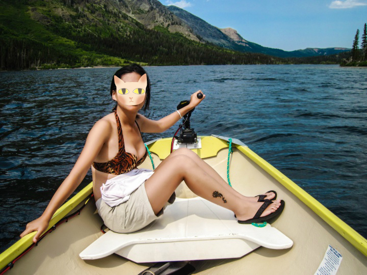
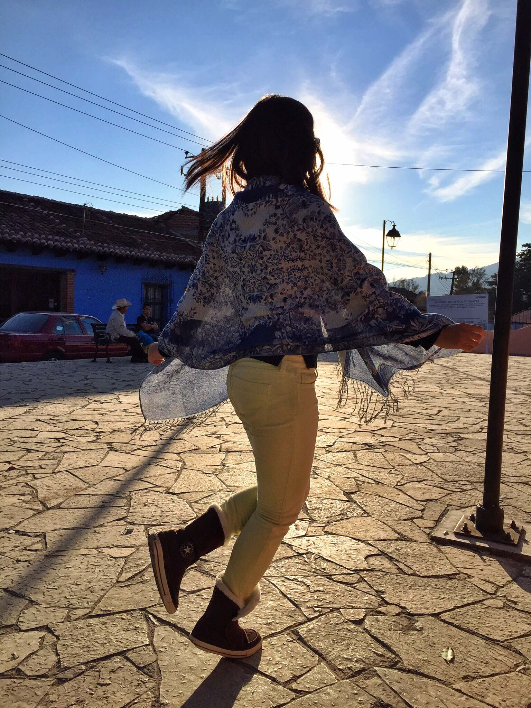

正文:
卧槽简直是血泪史。163cm多长30斤肉的血泪史。
小学看身板各种被认为营养不良，记忆犹新的是某次跟朋友各自坐妈妈自行车回家，特地把大腿在后座上压粗，比谁腿粗。
初一量校服制服那天大吃了一顿，导致那条短裙6年穿着都掉，后来我妈把裙子拿去改到一尺九的腰，改得还是太保守了，我那会儿腰围大概是一尺八。
初三最瘦的时候162cm41kg，高三最胖的时候163cm45kg。六年来给别人留下的外貌印象关键词：瘦，飞机场。那时候家里管得严，比较清苦，所以出去吃点比萨炸鸡之类的都觉得不容易，狂吃，大胃程度在同学中间也是有口皆碑。以为自己是干吃不胖的那一款。
本科出国终于被狠狠打脸。天天食堂无限量供应食物，就开始了发胖的不归路。在米国有freshman 15的说法，意思是大一一年可以长15磅体重，对我来说，就是freshman 20。第一年夏天回国，长肉将近20斤，被两位男性好友认真地评价为：你胖了。你该减肥了。
紧接着去了趟西藏，一个月，瘦回来一些。
之后搬到校外，不再吃食堂，没有车外食较少，为了省钱早晚自己糊弄食物（不能称得上做饭），中午没人陪吃饭经常饥一顿饱一顿。体重大概维持在100-105左右，有时候衣服穿得好，也会被人说觉得你只有80斤。于是很长时间没有思考过自己的体重。
本科毕业的暑假放了将近5个月，后两个月跟着爸妈混，回老家免不了各种饭局，菜总会点多，管够。天天吃撑，体重终于悄无声息地开始了第二轮攀升。反正我到了新学校，就已经迅速获得了胸大无脑的非恶意玩笑绰号，再也没有人觉得我跟瘦沾边。有时去健身房，但buddy是个男生，几乎只练力量不练有氧，练完又吃食堂，我的力量倒是涨了不少，但体重就这么居高不下，在健身房称，大概120磅左右。
第一年跟男盆友半同居状态，第二年完全同居。他是个发胖速度远赶不上吃饭速度的吃货，加上有了车，外食频率大幅提高，即使不外食，他也决不容忍糊弄饭菜。我出于减肥和懒的双重原因一般不愿做饭，他就各种钻研厨艺，厨艺精进了，我的体重也跟着上涨。直到一个月前终于立志减肥的时候，已经125磅。
因为胖，很多原来的衣服都穿不下了，穿衬衫按扣会崩开，穿牛仔裤肚子上勒出一圈游泳圈。不愿买衣服，不愿穿裙子热裤，只好拣几年前的宽松款凑合穿，整个人变成土肥圆。不愿去海边玩，不愿照相，不愿在镜子里看到自己。前两天答一个你愿不愿意嫁/娶异性版自己的问题，表示绝对不要我自己这样的女生，丑，胖。虽然以前也长得不算美女，但是对身材好非常满意，现在一点都不爱自己。要不是男盆友一直瞎了眼不离不弃（比起真爱，我更愿意觉得他是瞎），我估计早就丧失生活的信心了。
其实倒没觉得别人对我有什么不同，80多斤的时候exx很爱我，110多斤的时候现任也很爱我（虽然大一说我胖的那个也是他），80多斤很多人说我身材好，110多斤很多人说我胸大，80多斤被说假小子，110多斤被说女汉子。待遇确实差不多。最大的区别是，我自己不爱自己了。
就酱。写得太详细不得不匿名。正在健身长跑努力减脂，希望有朝一日能去答那个姊妹问题吧。
============补了几张真相============
不上很多图的原因是，中学期间中二，不爱拍照，且穿衣服都是巨宽松的校服T恤，不爱露腿，所以极少的照片也无法反映真实身材。发胖之后正经拍照必要后期，我修图技术虽然不到人像摄影师的功力，但是认真的话不动声色P掉10斤肥肉还是毫无压力的。
目前没液化过能看出对比的照片就找到几张，上图来自10年夏天某次高中班聚，从朋友相册里刨出来的渣画质。没有中学那么瘦，但是黑衬衫+热裤看着还算可以，猜测当时95斤左右。中图是12年夏天在米国Glacier National Park，刚刚经历了6星期出野外+半个月road trip，是多年来身体素质最好的时候，大概100斤。肥肉也是有的，不过藏在搭肚子的衣服下面。下图是14年冬天在墨西哥San Cristobal，可能115斤吧。多亏大披肩挡住了上半身，但是腿已经粗得没型了。
胸的话，上图比中图小一个cup，下图的时候比中图大两个cup，没真相自行脑补吧。曾经也是我不减肥的借口。不过现在觉得还是宁要贫乳萝莉身材。

